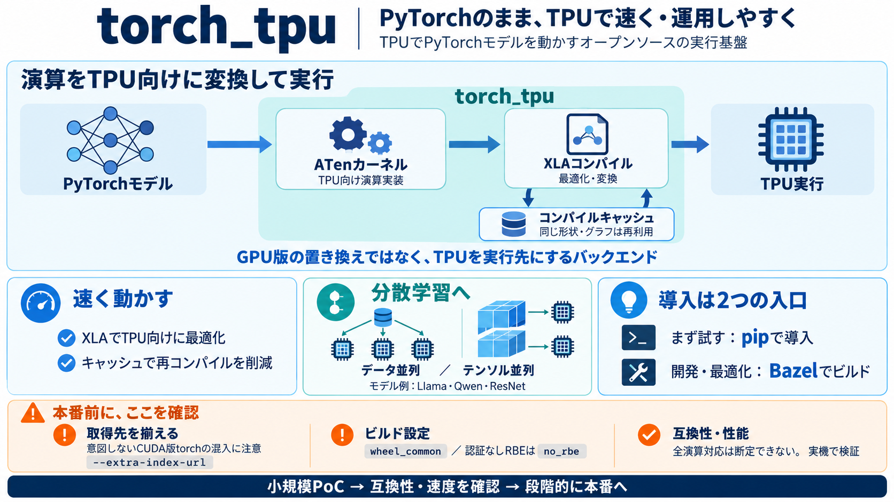

TorchTPU – A Hybrid Eager/Compiled Architecture for Native PyTorch Execution on TPU
TorchTPU provides out-of-the-box compatibility with the PyTorch ecosystem so developers can run open-source models on Go…

TorchTPU provides out-of-the-box compatibility with the PyTorch ecosystem so developers can run open-source models on Go…
TorchTPU provides out-of-the-box compatibility with the PyTorch ecosystem so developers can run open-source models on Go…
AI infrastructure # TorchTPU is now open source: Run native PyTorch on TPUs October 21, 2026 ##### Mark Lohmeyer VP …
From there the playbook applied, one change at a time, each measured on the same 64-chip slice. We raised the scoped VME…
## Verify PyTorch can access TPUs Use the following command to verify PyTorch can access your TPUs: ``` PJRT_DEVICE = …